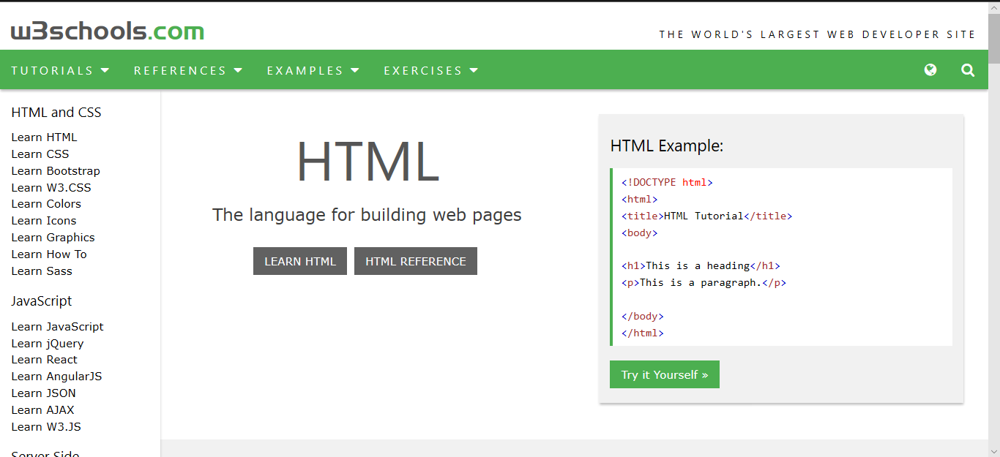
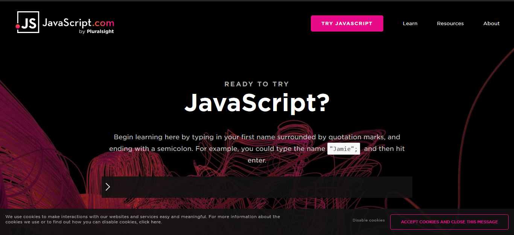
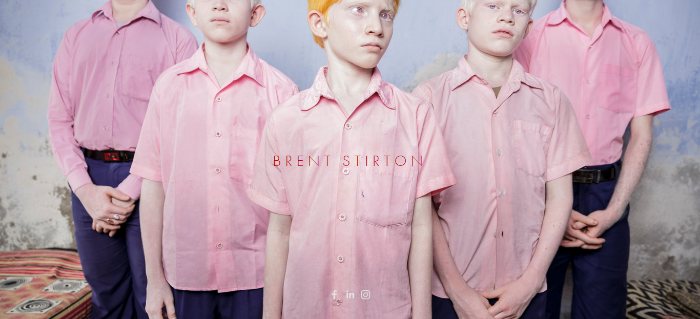

Research is basically known as the systematic investigation of the study of materials and sources which is done inorder to establish facts and reach many conclusions.
In the creation of this website, i have researched from many websites and taken ideas and implemented them here.
W3school.com
From this website it made me easier to learn different syntax of HTML CSS and Javascript.
Javascript.com
This website made me learn new things and made me clear about the differences between CSS and Javascript.
BRENT STIRTON
This following website of Brent Stirton is one of my favourites photographer. As i have interest in photography i do research a lot about many photography websites. I have made many things simpler to them. I wanted to design my website as him, so i added a link which is in my homepage